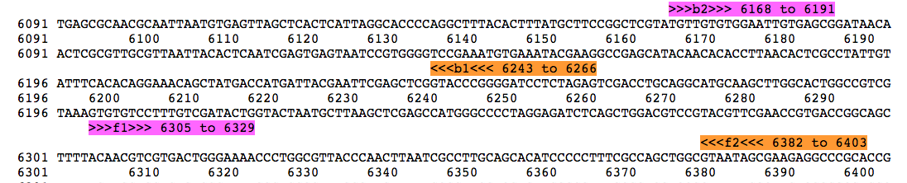
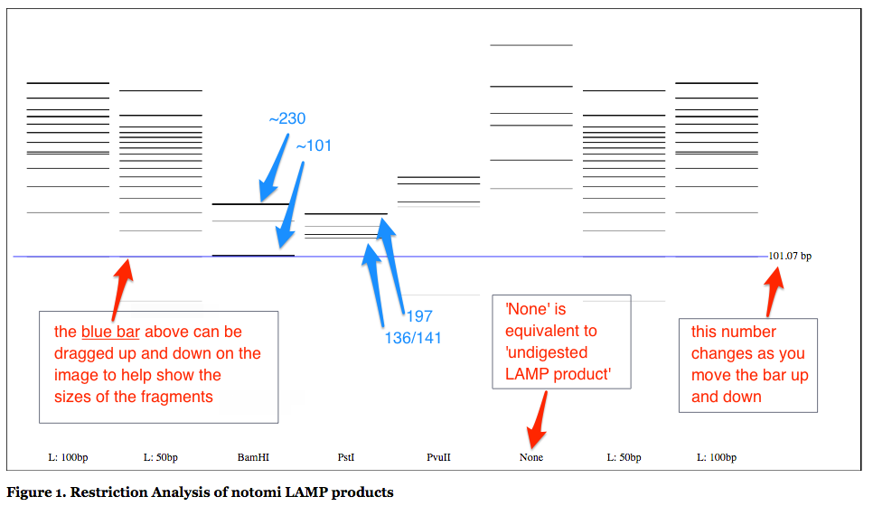

This program was created for the analysis of restriction digests of a loop-mediated
isothermal amplification (LAMP) reaction
(wiki).
As the products of a LAMP reaction are loop structures which can get sucessively larger as
the reaction proceeds (animation),
using a restriction digest to confirm the products by banding pattern is not as
straight-forward as it is with a reaction like polymerase chain reaction (PCR).
This program allows for fast analysis by determining the expected banding pattern and
outputting it to a virtual gel so that it may be compared to results obtained in a lab
setting. The expected pattern is predicted using the primer sequences and the target sequence
following the model described by notomi
et al. (2000) (see Figure 1.)
Note: currently this program does not accept loop primers as
input, later versions will have this as an option. View the source code on
GitHub
Enter fasta inputUsers must enter their target sequence and primers in fasta format into the first textarea. Tags for primers are restricted to: b1, b2, f1, f2, lb and lf. The target may be tagged whatever name you choose. The program checks user input upon clicking "start reaction" if the primers or target are not entered correctly, the program will not run. Primers lb and lf as well as the linker sequence are optional but all others are required.
Select lane contentsUsers must select for each lane either a ladder (50 or 100 bp), a retriction enzyme (from the list) or None. If None is selected, the output will be the undigested lamp products. Note that since the undigested products will be loop structures, their migration in the actual gel may be retarded. Therefore it would not be unexpected to observe that the fragments this program predicts are marginally smaller than those found in practice.
Start Reaction Upon clicking the "start reaction" button, the program executes with the data currently provided (input may be changed and the button clicked again to re-execute and produce multiple gels).
Align Primers The program searches for the best match to f2 and b2 since they are expected to anneal first, using this the f1 and b1 primers are aligned second. Then the overall setup is checked to ensure that the primers in these positions will admit a lamp reaction. If they will not, the program does not continue
Generate Products Produces the LAMP products (As outlined in Notomi et al. (2000). Loop-mediated Isothermal Amplification of DNA.)
Digest Products For each selected restriction enzyme, searches the products for cut sites. Stores the fragments (assumes fully digested)
Output Image (gel) uses distance travelled = log(bp) to plot the putative pattern of the gel. Note that the blue line can be dragged to use asa navigator in comparing lanes. The value to the right of the blue line is the expected base pairs for a band migrated to that postion. The bands are colored roughly corresponding to their expected intensity on the gel
Input used for an example is available online and was taken from notomi et al. (2000) . Output is shown below with some additional labelleling.
A good way to check if your input is correct is if all 4 primers align correctly when you enter the data in an alignment tool, for example the data above was aligned using the Primer Map tool (see alignment below). We can see that the b1 and f1 primers are aligned in the center and the b2 and f2 primers are aligned outside them. This is a valid orientation. If the mapping to the target input is ambiguous or the primers do not align to the target in an acceptable orientation the results will not be generated
In the notomi paper, they digested their LAMP product with BamHI, PstI and PvuII. As we can see from the diagram below, the expected fragments listed in the paper correspond to the major bands on the diagram. By automating this we can also easily predict the minor bands. Copy the text above (or input your own data) here to try it out for yourself
